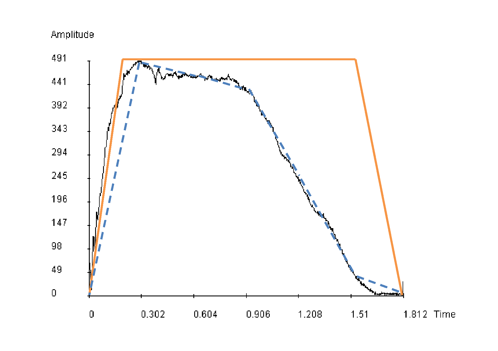

In this lab, you will add more control to the additive synthesis process and synthesize a more realistic trumpet tone.
The following figure shows the original amplitude envelope (solid black line) of the 1st harmonic of a trumpet tone. The orange straight line shows the amplitude envelope constructed in previous labs and the blue dashed line shows the amplitude envelope that we are going to implement in this lab.

aenv linseg 0, idur/6, iamp1,idur/6, iamp2, idur/6, iamp3, idur/6, iamp4, idur/6, iamp5, idur/6, 0
Implement the new sco file based on sinewave.sco.
It is always a good practice to update the commented header line:
; start dur freq iamp1 iamp2 iamp3 iamp4 iamp5
You should have no problems filling in the variables start, dur and freq.
Using the pvan+ program, you need to switch to the "Harmonics" tab.
Slide the "Show time" slider to until the time
showed is closest (no need to be very exact) to the following time for each time instance,
1.8147 (duration of the tone) / 6 * 1 = 0.30245
1.8147 (duration of the tone) / 6 * 2 = 0.6049
1.8147 (duration of the tone) / 6 * 3 = 0.90735
1.8147 (duration of the tone) / 6 * 4 = 1.2098
1.8147 (duration of the tone) / 6 * 5 = 1.51225
After changing for each time instance, you may notice the spectral snapshot has changed. Choose Data => Copy current spectral snapshot => Tab separated from the menu. Paste the copied data in a text editor. A series of numbers are the amplitudes of each harmonic at that time instance (e.g. 0.30245). Fill in the ampl1 of the ten harmonics using the first ten numbers.
You score file should look like this.
Fill in the ampl2 to ampl5 by repeating the process above.
The finished score should look like this.
You may compare the synthesized tone with the tone in the previous lab. You may realize the tone synthesized in this lab is more realistic.
Repeat the above process, synthesize the clarinet tone we have synthesized in lab 1.
The synthesized tone should sound like this.
If you have finished your assignment and demonstrated to your TAs, you don't need to submit your files to CASS. But if you don't attend the labs or you cannot finish the assignment in the lab, you need to submit the source code using the CASS.
Please submit your files "additive.orc" and "additive.sco" using CASS before Monday (20-Oct-2014). For any questions, please contact your TAs by email (*Only for question asking. Submissions please go to CASS.* ronmo@cse.ust.hk, bwuaa@cse.ust.hk). DO NOT submit the wav file; submitting the orc and sco files will be enough. Thank you.